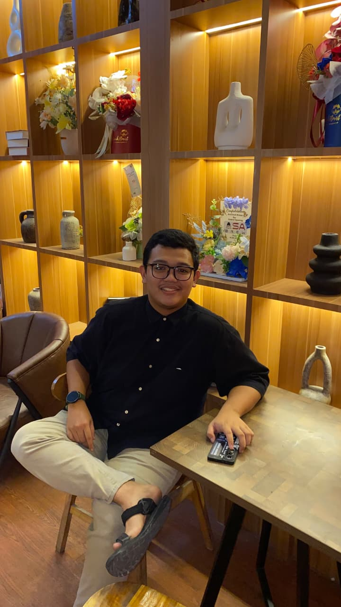

Web
Halo, saya
Mahasiswa Sistem Informasi

Saya adalah mahasiswa Sistem Informasi di Universitas Tanjung pura Fakultas Matematika dan Ilmu Pengetahuan Alam yang tertarik pada dunia IT, khususnya pengembangan web dan desain antarmuka. Saya senang mengubah ide menjadi tampilan yang rapi, mudah dipakai, dan bermanfaat.
Latar belakang pendidikan: Lulusan Madrasah Aliyah Negeri Singkawang, kini menempuh semester [1], di Fakultas Matematika Ilmu Pengetahuan Alam
Hobi: Bermain Game,Mendengar musik,Traveling
Bertugas di MANDEL CUP
Aktif dalam kegiatan sekolah dan koordinasi acara.
Fakultas Matematika dan Ilmu Pengetahuan Alam
Jurusan Peminatan IPS.
Tertarik berkolaborasi atau sekadar menyapa? Hubungi saya lewat tautan berikut.